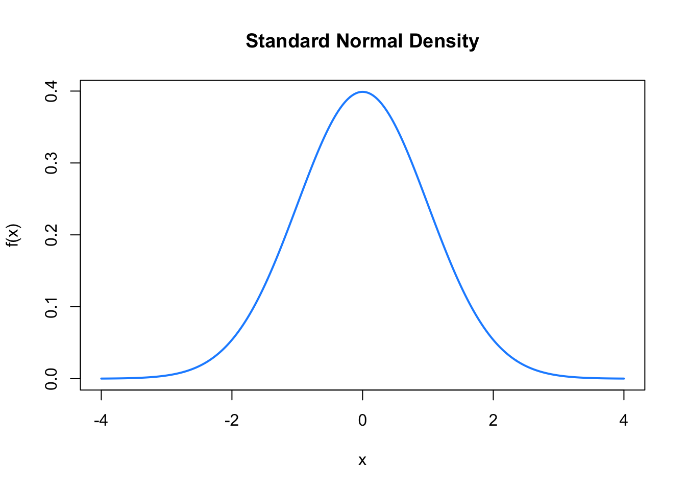
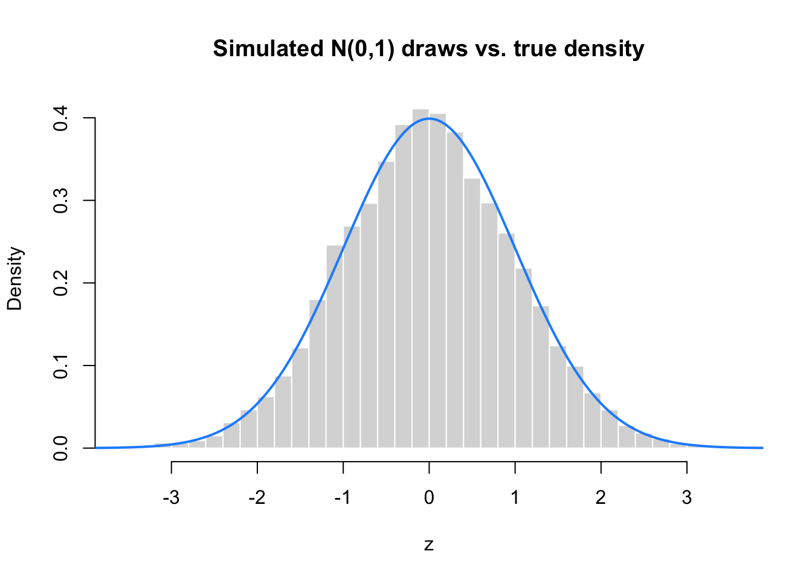
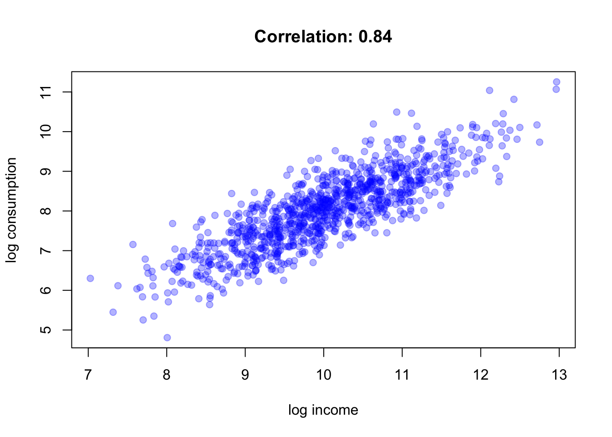

set.seed(1234)
flips = sample(c(0, 1), size = 10000, replace = TRUE, prob = c(0.5, 0.5))
table(flips) / length(flips)flips
0 1
0.501 0.499 This chapter is a review. You will have seen most of these concepts before in a basic probability or statistics course. Our goal here is not to re-derive everything from first principles, but to refresh the concepts and notation that we will rely on heavily once we start doing statistics (Chapter 4) and regression (coming up soon). Along the way we will use R to simulate random variables, which is often the most intuitive way to build (or rebuild) intuition about probability.
A random variable is a variable whose value is the outcome of a random phenomenon. We usually denote random variables with capital letters, e.g. X, Y, and particular realizations (i.e. the value that a random variable actually takes once we observe it) with lower case letters, e.g. x, y.
There are two basic flavors of random variables that matter to us:
In this course we will almost always use continuous random variables to model economic quantities (income, prices, test scores, …), even though in practice data are often rounded or measured in discrete units (cents, dollars). The continuous approximation is usually good enough, and much easier to work with mathematically.
For a discrete random variable X, we describe its behavior with a probability mass function (PMF), p(x) = P(X = x), which has to satisfy p(x) \geq 0 for all x, and \sum_x p(x) = 1.
A simple example is a fair coin flip, encoded as X \in \{0, 1\} with P(X=1) = P(X=0) = 0.5. We can simulate many such coin flips in R:
set.seed(1234)
flips = sample(c(0, 1), size = 10000, replace = TRUE, prob = c(0.5, 0.5))
table(flips) / length(flips)flips
0 1
0.501 0.499 Notice that the simulated proportions are close to, but not exactly, 0.5. This is a preview of why we need statistics: we rarely know probabilities exactly, we only have finite samples from which we try to learn about them.
For a continuous random variable X, there is no meaningful “probability of a single point” (it is exactly zero!). Instead we describe X with a probability density function (PDF) f(x), such that for any interval [a,b], P(a \leq X \leq b) = \int_a^b f(x)\, dx.
The PDF must satisfy f(x) \geq 0 and \int_{-\infty}^{\infty} f(x)\, dx = 1.
Closely related is the cumulative distribution function (CDF), F(x) = P(X \leq x) = \int_{-\infty}^{x} f(t)\, dt, which gives the probability that X is less than or equal to some value x. The CDF is always non-decreasing, and satisfies F(-\infty) = 0 and F(\infty) = 1.
By far the most important continuous distribution for us is the Normal (or Gaussian) distribution, written X \sim N(\mu, \sigma^2), with PDF f(x) = \frac{1}{\sqrt{2\pi\sigma^2}} \exp\left( -\frac{(x-\mu)^2}{2\sigma^2} \right).
The parameter \mu is the mean (center of the distribution) and \sigma^2 is the variance (spread of the distribution). The special case \mu = 0, \sigma^2 = 1 is called the standard normal distribution.
R has built-in functions for the normal (and most other common distributions), following a consistent naming convention:
| Prefix | Meaning | Example |
|---|---|---|
d |
density, i.e. f(x) | dnorm(x) |
p |
CDF, i.e. F(x) = P(X \leq x) | pnorm(x) |
q |
quantile function, inverse of the CDF | qnorm(p) |
r |
random draws from the distribution | rnorm(n) |
Let’s plot the density of a standard normal:
x = seq(-4, 4, by = 0.01)
plot(x, dnorm(x), type = "l", lwd = 2, col = "dodgerblue",
main = "Standard Normal Density", ylab = "f(x)")
And let’s draw a large sample and compare its histogram to the theoretical density:
set.seed(2024)
z = rnorm(10000, mean = 0, sd = 1)
hist(z, breaks = 50, freq = FALSE, col = "grey85", border = "white",
main = "Simulated N(0,1) draws vs. true density", xlab = "z")
lines(x, dnorm(x), col = "dodgerblue", lwd = 2)
We can also use pnorm() to answer questions like “what is the probability that a standard normal random variable is less than 1.96?”:
pnorm(1.96)[1] 0.9750021or use qnorm() to find the value below which, say, 97.5% of the mass lies (this number, 1.96, will reappear very often once we do hypothesis testing!):
qnorm(0.975)[1] 1.959964Your turn: using pnorm(), compute P(-1.96 \leq Z \leq 1.96) for a standard normal Z. Then verify your answer by simulation: draw a large vector z = rnorm(1e6) and compute the fraction of draws that fall in [-1.96, 1.96] using logical subsetting (as in (R-intro?)). The two answers should be very close.
The expectation (or expected value, or mean) of a random variable is a weighted average of its possible values, weighted by their probability. For a discrete random variable, E[X] = \sum_x x \, p(x), and for a continuous random variable, E[X] = \int_{-\infty}^{\infty} x \, f(x)\, dx.
Expectation is a linear operator: for constants a, b and random variables X, Y, E[aX + b] = a E[X] + b, \qquad E[X + Y] = E[X] + E[Y].
We can illustrate the Law of Large Numbers – the fact that sample averages converge to the true expectation as the sample size grows – by simulation. Take X \sim N(5, 4), so E[X] = 5:
set.seed(42)
ns = c(10, 100, 1000, 10000, 100000)
sample_means = sapply(ns, function(n) mean(rnorm(n, mean = 5, sd = 2)))
data.frame(n = ns, sample_mean = sample_means) n sample_mean
1 1e+01 6.094594
2 1e+02 5.001420
3 1e+03 4.911027
4 1e+04 4.984448
5 1e+05 4.994039As n grows, the sample mean gets closer and closer to the true mean, 5.
The variance measures how spread out a random variable is around its mean: \text{Var}(X) = E\left[(X - E[X])^2\right] = E[X^2] - (E[X])^2.
The square root of the variance, \sigma = \sqrt{\text{Var}(X)}, is the standard deviation, which has the convenient property of being measured in the same units as X itself (variance is in squared units).
Useful rules for variance: for constants a, b, \text{Var}(aX + b) = a^2 \text{Var}(X), and if X and Y are independent, \text{Var}(X + Y) = \text{Var}(X) + \text{Var}(Y).
In R, we estimate the variance and standard deviation of a sample with var() and sd():
x = rnorm(1000, mean = 5, sd = 2)
var(x) # should be close to 2^2 = 4[1] 3.784915sd(x) # should be close to 2[1] 1.945486When we have two random variables X and Y, we often want to know whether they move together. The covariance is defined as \text{Cov}(X,Y) = E\left[(X - E[X])(Y - E[Y])\right].
Covariance is positive when X and Y tend to be above (or below) their means at the same time, negative when one tends to be above its mean while the other is below, and zero when there is no such linear relationship (though this does not imply independence!).
The problem with covariance is that its magnitude depends on the units in which X and Y are measured, which makes it hard to interpret. The correlation coefficient rescales covariance to always lie between -1 and 1: \text{Corr}(X, Y) = \rho_{X,Y} = \frac{\text{Cov}(X,Y)}{\sqrt{\text{Var}(X)}\sqrt{\text{Var}(Y)}}.
Let’s simulate two correlated variables and check this in R. Suppose a household’s log consumption Y depends partly on log income X, plus some noise:
set.seed(7)
n = 1000
x = rnorm(n, mean = 10, sd = 1) # log income
y = 0.8 * x + rnorm(n, mean = 0, sd = 0.5) # log consumption
cov(x, y)[1] 0.7855589cor(x, y)[1] 0.8425839plot(x, y, pch = 19, col = rgb(0, 0, 1, 0.3),
xlab = "log income", ylab = "log consumption",
main = paste("Correlation:", round(cor(x, y), 2)))
Notice the close connection to what is coming next: a scatterplot like this one, together with the idea of “the best fitting line through the cloud of points,” is exactly the starting point of linear regression, which we study in the next chapters.
Finally, a brief reminder about conditional probability. The probability of event A given that event B has occurred is P(A \mid B) = \frac{P(A \cap B)}{P(B)}, \qquad \text{provided } P(B) > 0.
Two events A and B are independent if knowing that B occurred tells us nothing about A, i.e. P(A \mid B) = P(A) \qquad \Longleftrightarrow \qquad P(A \cap B) = P(A) P(B).
This idea extends to random variables: X and Y are independent if their joint density factors as f(x,y) = f_X(x) f_Y(y). Independence is a much stronger condition than being uncorrelated (\text{Corr}(X,Y) = 0): independent variables are always uncorrelated, but uncorrelated variables need not be independent.
Your turn: simulate X \sim N(0,1) and Y = X^2. Compute cor(x, y). You should find a correlation very close to zero, even though Y is a deterministic (and definitely not independent!) function of X. This illustrates why “uncorrelated” and “independent” are not the same thing.
R’s dnorm/pnorm/qnorm/rnorm family lets us compute with it directly.mean(), var(), sd()) estimate them from data.cov(), cor()) summarize the linear association between two random variables.These tools are exactly what we need to get started with summary statistics and data visualization in the next chapter, and eventually with linear regression, which is nothing other than finding the best-fitting line through a cloud of points like the one we plotted above.